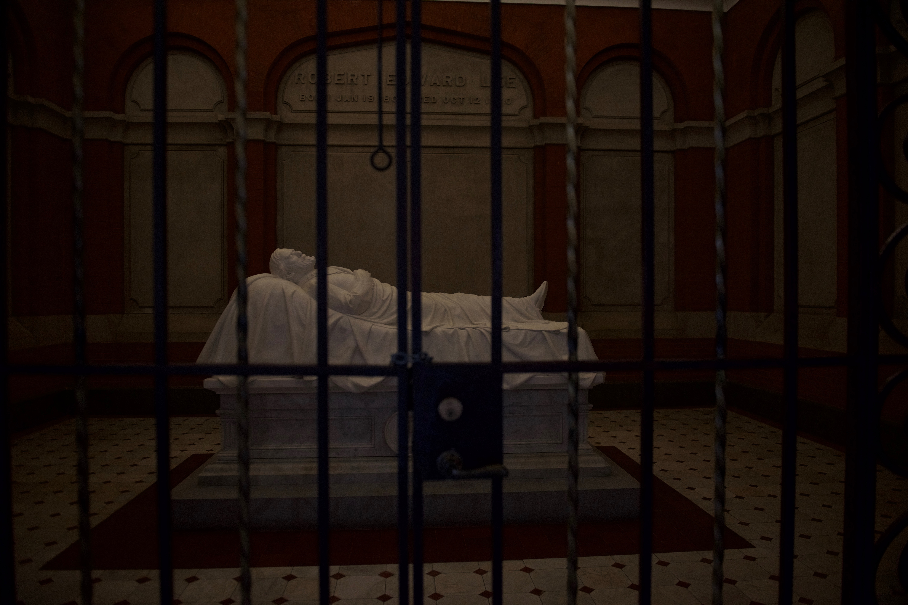
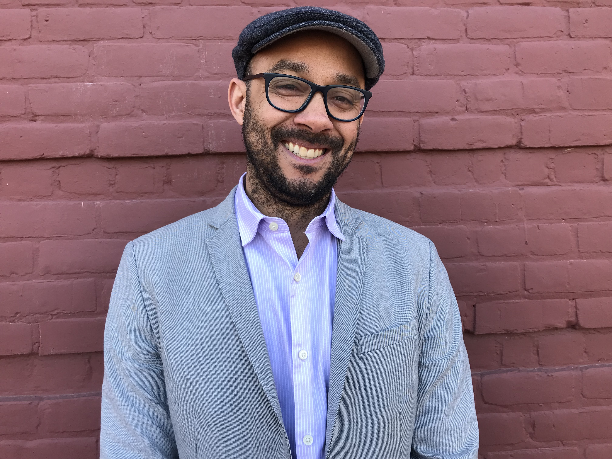
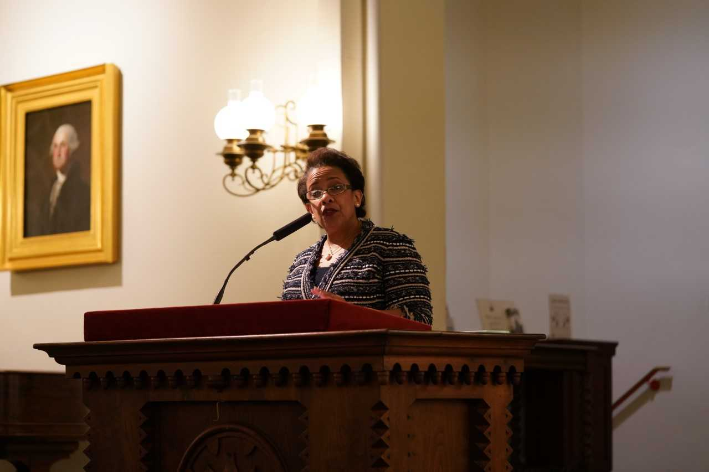
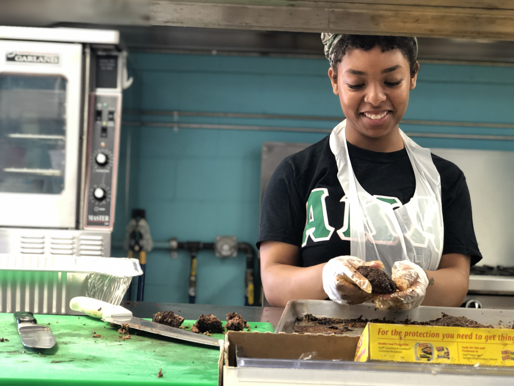
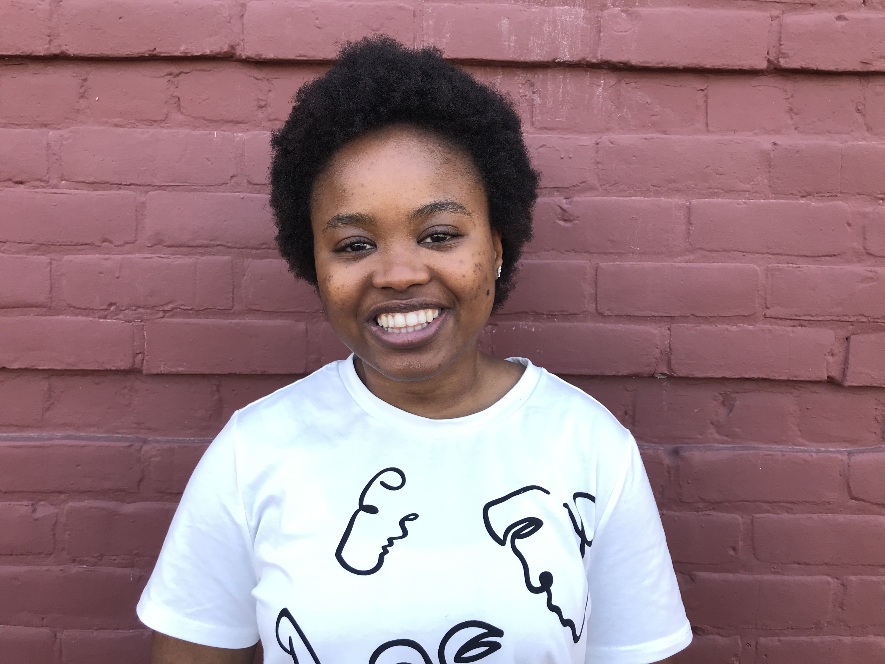

Washington and Lee University is experiencing an identity crisis as administrators, faculty, students and their parents
pull in opposite directions: Is the school truly a liberal arts institution? Or is it a business school with liberal arts
on the side? At the same time, the university is grappling to place its past in fuller, fairer context as it launches
efforts aimed at attracting students of color. Can Washington and Lee make everyone feel at home?
Scroll to begin story.
Yes, but a broken one. -Sasha Edwards, '20
In September 2018, Washington and Lee welcomed the most diverse class in the university’s nearly 270-year history. Of the 474 first-year students who enrolled, 83 are domestic students of color.
The university’s board of trustees approved a sweeping, $650 million strategic plan last May that is geared toward attracting diverse students, faculty and staff—and making them feel at home.
“Students these days are not putting up with being treated in any old way. They’re not putting up with being subjected to bad treatment or oppressed,” Stefani Evans, a third-year law student, said. “People these days are standing up and saying: ‘This is what I want. How is the school going to help me get this? How are they going to facilitate my needs and my identity and who I am?’”
The plan calls for a new need-blind approach to admissions, which officials estimate will cost $135 million. It also includes an addition to Huntley Hall, which houses the Williams School of Commerce, Economics and Politics, and renovations to Leyburn Library and the Science Center.
To comply with Title IX, the federal law that prohibits sex discrimination in education, the university is building a softball field to attract female athletes to play on a team. Part of the strategic plan also mentions the university’s intention to address the increasing demand for mental health counseling.
The university has been trying to achieve diversity and inclusivity for many years. But change doesn’t happen quickly at Washington and Lee.
Washington and Lee University traces its origins to 1749. Confederate General Robert E. Lee became president of Washington College after the Civil War. After Lee’s death in 1870, the college’s trustees named the school after him.
Washington and Lee didn’t integrate until 1966.
And it didn’t admit women until 1985.
Not everyone feels at home at Washington and Lee for many reasons, including the school’s history, its reverence for Lee and the prominence of the Greek system among students.
Calling this place home has been really difficult and really trying.
Sasha Edwards, '20, Biology major
Closed Doors: The Weight of the Lee Legacy
Every September, the incoming class of students is required to gather before the recumbent statue of Lee for the annual Honor System orientation in Lee Chapel. Every student is asked to sign the Honor Book as a pledge that they will not lie, cheat or steal.

Being inside Lee Chapel can be a “tormenting” experience for students of color like junior Sasha Edwards. She said the university is “stuck” in traditions that can make students of color feel dehumanized.

Ricardo Wilson, Assistant Professor of English, reads his short story entitled, ‘"Crackerasssuckafool.”
Evans, the law student, was a part of the Student Coalition for Campus Change that called on President Will Dudley to relocate mandatory events that are held in Lee Chapel, among other demands the group made in January 2018.
“Lee Chapel has its place at the school, because Robert E. Lee did contribute to our school, but I think forcing students to have to go and sit in the chapel, when they might not feel comfortable doing that, is not the right response,” Evans said. “I think having it somewhere else would be more inclusive.”
Other students of color like junior Ramonah Gibson said they did not grasp the weight of the university’s history when they decided to attend to Washington and Lee.
“I didn’t grow up as a traditional African-American. So, I didn’t understand what Robert E. Lee was or what he had done or what his legacy was,” said Gibson, who was raised in West Africa but moved to the United States in 2013. “I just knew that it was the center of our university, and I so desperately wanted to fit in.”
I so desperately wanted to fit in. -Ramonah Gibson, '20
The strategic plan outlines the university’s desire to build a modern $20 million museum that presents the university’s history “comprehensively and accurately.” The university has hired Lynn Rainville as director of institutional history. Rainville, associate dean at Sweet Briar College, is known for her research on African-American history.
But some students fear a museum will be just another building that exaggerates Lee’s legacy.
“I wanted a museum to be an African-American museum or dedicated to people whose voices have not been heard across campus—not a museum to again celebrate what we already celebrate every day,” Evans said.
Students who avoid Lee Chapel miss nationally known public figures and experts who give speeches there. Loretta Lynch, the first black woman to serve as attorney general of the United States, spoke in Lee Chapel in March at the student-run Contact Committee’s invitation.
“Well, I don’t go, because I told you I don’t want to be tormented by yet another thing on this campus,” Edwards said.
She said campus organizations are “tearing” down students of color by inviting speakers that “look like” them—and by hosting them in Lee Chapel.

Gibson said Lee Chapel is “like a shrine” to only part of the university’s history.
“If you talk to most students who have a problem with the way we treat Lee, it’s not that they want to get rid of him,” she said. “It’s that they want the whole story to be told.”
Ramonah Gibson, '20, Theater major and Creative Writing minor
We’re not very good at telling the history of the female version of W&L, of the students of color of W&L.
Beyond the History: Finding a Place On and Off Campus
Students, whether of color or independents, said they often feel excluded from social and academic settings. Nearly 74 percent of the student body are members of Greek organizations.
Senior Nora Devlin said she doesn’t regret her decision to be an independent. But she said it can be difficult to feel comfortable at parties hosted by fraternities and sororities.
“You are defined by your Greek status from the time that you are in it until you graduate, because everyone asks you. It’s like, ‘Hi, what’s your name? What sorority are you in?’ You know?” Devlin said.
Freshman Ana Estrada Hamm is a Peruvian-American from Bentonville, Ark., who decided to join Chi Omega. Estrada Hamm said that when she visited certain sororities, she noticed that everyone looked alike, but not like her.
Ana Estrada Hamm, '22
I looked for people who looked like me, and there weren’t any.
In recent years, a black fraternity, Alpha Phi Alpha, and a black sorority, Alpha Kappa Alpha, became active on campus. But Edwards said not everyone knows it. Nor are visitors usually told.
“Right now, when they do tours, it’s ‘Oh, there are six sororities.’ No, there’s seven active, actually,” Edwards said. “There are black women here who want to be part of those black Greek letter organizations, and I was one of them.”
Edwards said Alpha Phi Alpha and AKA can help black students feel more at home at Washington and Lee.

“Black students can have a good and impactful experience here on this campus, like W&L can be a home to anybody as long as there’s space for us,” she said.

Joëlle Simeu, junior English major and Africana Studies minor, reads a poem she wrote for the February edition of The Vigil entitled, "5 Stages of Grief: On Being Black."
Housing becomes an issue for students who decide against living in a Greek house. The university offers several theme houses in an attempt to create an environment in which students of color can feel more welcome.
Chavis House now serves as the Alpha Phi Alpha fraternity house. The house is named for Reverend John Chavis, who graduated from Liberty Hall (the university’s former name) in 1799 and is recognized as the first African-American student to attend Washington and Lee.
Junior Garrett Clinton revived the Alpha Phi Alpha chapter through an affiliation with James Madison University in Harrisonburg.
AKA does not have a house. But Edwards said most of the nine historically African-American Greek organizations under the National Pan-Hellenic Council do not have houses on college campuses.
Both Edwards and Gibson live in Sankofa House, the former Culinary House, which opened this year primarily for black students. Gibson said Sankofa is a place where black students can be surrounded by other students who understand their experience as a minority on campus.
Ramonah Gibson, '20
A lot of the time we recognize that our classmates have never really been in a classroom with somebody who’s black, or they’ve never really spoken to a black person as an equal before.
But even the safe spaces feel unsafe.
On the second night of Orientation Week in September, Edwards said someone shouted racial slurs and a death threat outside Sankofa House. She said students who were living there were rattled and wondered whether they should move.
In October, students found Ku Klux Klan fliers in the parking garage and around the law school, Woods Creek apartments, the Village parking lot and on sidewalks and cars on campus. The fliers urged the university to keep Lee in its name, and made other inflammatory remarks.
It was the third time Edwards said she had seen KKK fliers on campus. She said she was disappointed in the university’s response.
Racism isn’t something that’s an anomaly on this campus.
Sasha Edwards, '20
There also were multiple incidents last fall when homophobic remarks were made directly to students at fraternity parties, or students were asked to leave because of their sexual orientation. Students said beer was splashed on them.
Senior Kat Oakley, an LGBT peer counselor, said she worries students won’t stand up for classmates who are subjected to homophobic attacks.
Oakley, who is president of Generals Unity, a student organization that promotes equal rights and justice, said the university should hold fraternities accountable. Fraternities govern themselves through the Interfraternity Council except in extreme circumstances, such as hazing, when the administration steps in. In 2015, President Ken Ruscio suspended the fraternity Phi Kappa Psi for three years following a hazing incident, doubling the punishment suggested by the IFC.
Students were feeling not only unwelcome but unsafe.
Kat Oakley, '19, Anthropology and Spanish major and Environmental Studies minor
Making It Home
Last November, Maurice Cole, a 1994 graduate, was asked to join the committee planning his class’s 25th reunion.
Cole said he told his former classmates about his experience at Washington and Lee. He recalled for them how he felt “marginalized” as a student of color. Cole inspired his class to raise $1 million as a gift to renovate the second floor of Elrod Commons to house the Office of Inclusion and Engagement.
“You know, one of my favorite quotes is: ‘Diversity counts the people; inclusion makes sure all the people count,’” said Tamara Futrell, dean of diversity, inclusion and student engagement. “That’s exactly what we’re trying to do here—making sure that Washington and Lee is a place where all students feel like it’s their home [and] like this is their institution, and they’re not guests here.”
Kitanna Hiromasa, senior Economics major and Creative Writing minor, reads her poem submitted to Ampersand entitled, "Synecdoche."
Futrell, who was a member of the steering committee for the strategic plan, said she wants the school’s plans for a museum to “reflect the true history” of the university.
I think we need to make sure that every part of the history is reflected, good or bad.
Tamara Futrell, Dean for Diversity, Inclusion, and Student Engagement
Evans said she hopes the museum will be dedicated to the people “who haven’t been celebrated to the grandeur” of Lee. But she is apprehensive that it will happen because plan are in flux and “everything is up in the air.”
Stefani Evans, 3L
In the end, I fear that it’s just going to be like Lee Chapel 2.0 Museum.
Edwards said she wants the museum to be included in the curriculum after it’s built, in the same way Lee Chapel has been incorporated in her education.
“If this museum is being built, it shouldn’t just be there for people who are into history to go
into,” she said. “It should be something that is folded into the education of the students here because you can’t be open minded or think critically unless you know all sides of the story, without knowing things that are outside your comfort zone and your community.”
Edwards said a lot has changed at the university since her first year. “I’m not saying we’re there yet,” she said, “but they’re definitely trying.”
I hope it’s not as slow as it’s been the past 10 years. -Ramonah Gibson, '20